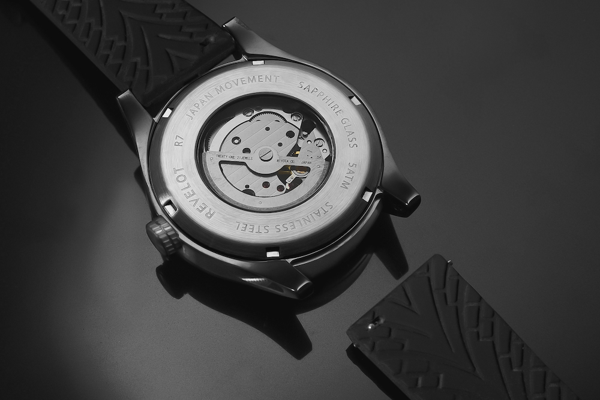

How Technology is Shaping the Future of Watches and Consumer Preferences
The watch industry, once rooted in tradition and craftsmanship, is now undergoing a remarkable transformation driven by technological innovation.From smartwatches to blockchain verification, technology is not only reshaping watch design and manufacturing but also redefining how consumers interact with timepieces.
Let's explore how this convergence of innovation and timekeeping is revolutionizing the industry and meeting evolving consumer expectations.
Smartwatches: Redefining Timekeeping
Watches are no longer mere timekeepers—they've become digital companions.
Smartwatches have revolutionized the purpose of wearing a watch, combining utility with cutting-edge technology.
With features like fitness tracking, sleep monitoring, and smartphone integration, smartwatches cater to the needs of an increasingly connected lifestyle.
Shift in Consumer Behavior
Tech-savvy buyers, especially millennials and Gen Z, are gravitating toward watches that offer more than just aesthetics.
The ability to merge style with functionality has fueled the smartwatch boom, making them a staple in modern wardrobes.
The Materials Revolution: Innovation Meets Sustainability
Watches are no longer mere timekeepers—they've become digital companions.
Smartwatches have revolutionized the purpose of wearing a watch, combining utility with cutting-edge technology.
With features like fitness tracking, sleep monitoring, and smartphone integration, smartwatches cater to the needs of an increasingly connected lifestyle.
Emerging Trend
Today’s consumers value sustainability as much as quality. Brands that embrace eco-friendly materials or incorporate recycled components are winning over environmentally conscious buyers, aligning with their values.
Customization Meets Technology
Personalization has become a key driver in the modern watch industry.
Interactive platforms now allow buyers to design their watches down to the smallest detail,
from the dial to the strap, ensuring each piece reflects their unique style.
Consumer Expectation
The growing desire for individuality is pushing brands to offer customizable options, creating a
deeper emotional connection with their customers.
Retail Reinvented: AR and VR in the Watch Space
Buying a watch is no longer limited to physical stores or static online catalogs. Augmented and
virtual reality technologies enable customers to try on watches virtually, explore intricate designs
up close, and even immerse themselves in brand storytelling
Market Adaptation
With e-commerce dominating retail, AR and VR provide a digital solution that mimics the tactile
experience of shopping in-store, enhancing buyer confidence
Authenticity Reinforced by Blockchain
Counterfeit concerns in the luxury watch market are being addressed through blockchain
technology. Digital records ensure authenticity and allow buyers to trace the ownership history
of their timepieces..
Luxurys New Standard
The growing desire for individuality is pushing brands to offer customizable options, creating a
deeper emotional connection with their customers.
The impact of technology on watches
As the world moves forward technology keeps on evolving. Watches are no exception. With the rise of
smartwatches and the integration of technology into traditional watches, the industry is witnessing a
significant shift. The impact of technology on watches is multifaceted, with both positive and negative
effects.
The positive impact
Modern smartwatches, they offer functionality beyond time telling. They offer various functions such as
fitness tracking, smart phone integration, health tracking and more. This has made watches more than just
a fashion accessory. Not only functionality but environmentally friendly watches are also gaining popularity
among consumers and producers. Eco-friendly materials are being used to make watches, even the boxes they are packaged
in are made from recycled materials.
Smartwatches are getting well "smarter" with AI features, voice assistants, and health tracking. Some can spot irregular heartbeats, measure oxygen levels, and
track stress using special sensors. They also have fall detection and emergency SOS options, which are especially helpful for seniors or people with health issues.
With continuous advancements in technology, sustainability, and user experience, smartwatches are shaping
the future of wearable devices, making them indispensable tools for health, productivity, and convenience.
The negative impact
While it all seems good, there are some negative impacts of technology on watches. The most significant one is the
loss of traditional craftsmanship. With the rise of smartwatches, the demand for traditional watches has decreased.
This has led to a decline in the number of skilled watchmakers along with tradition. The technology has advanced but
the price has also increased. This has made watches (apart from luxury watches) less affordable to the masses.
Although sustainable materials are being used to produce watches, the production process still has a significant impact on the environment.
The mass production of watches require a lot of energy and resources which is not sustainable in the long run.
Finally, the pressure to always innovate in the tech industry has created a culture where older smartwatch models quickly become outdated, leading people to replace them often and create more waste.
This constant demand for new gadgets could go against efforts to be more sustainable and consume responsibly in the long run.
Final Thoughts
As technology continues to shape the watch industry, brands face a dual challenge: embracing
innovation while staying true to their heritage. The blending of tradition with technology is not
just reshaping the watches themselves but also the experiences they deliver. In this dynamic
landscape, the future of watches lies not just in keeping time but in keeping pace with the ever-
evolving expectations of consumers.